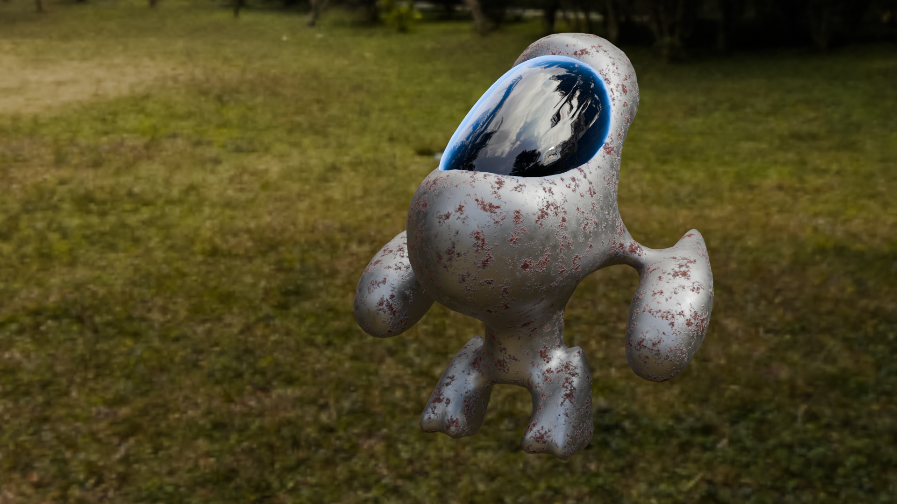

Modelado 3D y Texturizado
Modelados en Autodesk Maya y texturizados en Blender.


Desarrollador de Videojuegos · ITIAD - Simulaciones
Modelados en Autodesk Maya y texturizados en Blender.
Proyectos de edición, sincronización y corrección de color realizados con Davinci Resolve y Adobe Premiere.